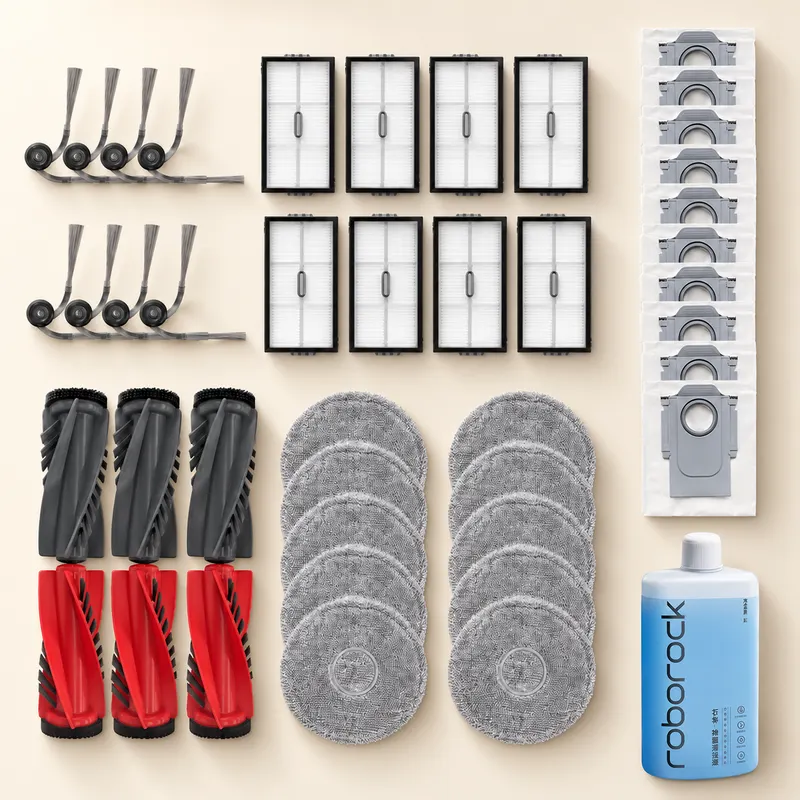
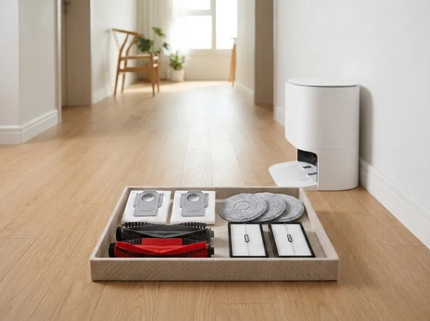
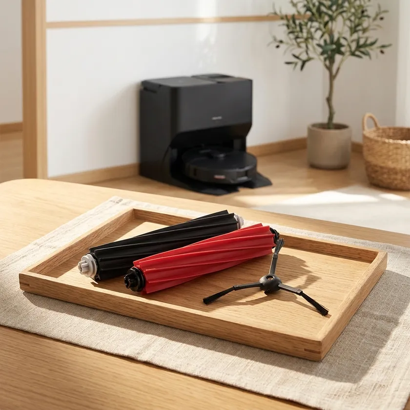
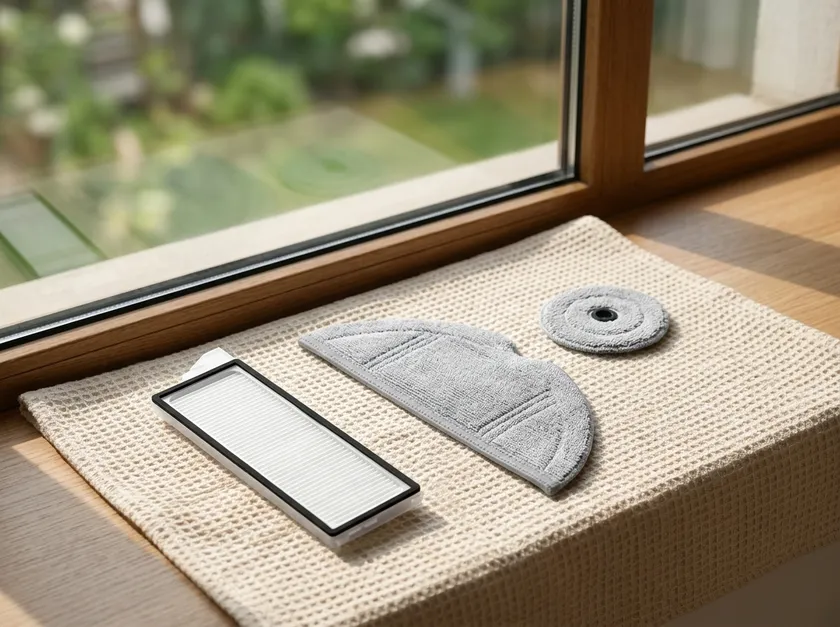

로보락 (Roborock)
강마루·타일 바닥재별 로보락 Qrevo 2 Pro 회전 걸레·브러시 1년 세트 관리
글·구성: 제이상점 · 기종별 1:1 호환 실물 점검 · 교체 주기 비교표 · 스마트스토어 패키지 안내

핵심 관리 · 선택 체크포인트
- 거실 강마루와 주방 타일을 오가며 회전 물걸레 청소를 수행하는 로보락 Qrevo 2 Pro는 레드 스파이럴 고무 메인브러시와 원형 걸레 패드의 밀착력을 일정하게 유지해 주는 것이 핵심입니다.
- 레드 스파이럴 싱글 고무 브러시 양끝 청소와 원형 걸레 교대: Qrevo 2 Pro는 단일 레드 스파이럴 실리콘 브러시와 3암 사이드브러시, 도톰한 그레이 원형 회전 물걸레 패드를 사용합니다.
- 로보락 Qrevo 2 Pro 1년 세트 소모품 규격 및 관리표: Qrevo 시리즈 내 세부 모델과 혼동하지 않도록 확인할 핵심 규격입니다.
- 보유 기종이 로보락 Qrevo 2 Pro인지 확인한 뒤 상세페이지에서 1년 세트를 선택해 보세요.
- 베란다 티크 매트 통풍 건조와 다용도실 수납장 정리: 물세척 후 24시간 교대 건조를 위해 예비 부품이 필요하시다면 네이버에서 ‘제이상점 로보락 Qrevo 2 Pro’을 검색하시거나 제이상점 로보락 Qrevo 2 Pro 1년 소모품 패키지 페이지에서 기간별 포함 수량을 미리 확인해 보세요.
실물 부품 디테일 · 관리 구성 이미지




부품 규격 · 점검 기준표
| 부품 구분 | 로보락 Qrevo 2 Pro 규격 | 점검 및 교체 포인트 |
|---|---|---|
| 레드 스파이럴 메인·3암 브러시 | 단일 적색 나선형 고무 롤러 + 3갈래 사이드브러시 | 양끝 회전축 먼지 제거 및 고무 날개 마모 상태 확인 |
| 원형 회전 물걸레 패드 | 그레이 극세사 원형 패드 쌍 | 마루·타일 물자국 방지를 위해 세탁 후 통풍 건조 및 동시 교체 |
| 사각 워셔블 필터·더스트백 | 직사각 헤파필터 + 회색 슬라이딩 칼라 더스트백 | 필터 24시간 그늘 건조 교대 및 더스트백 70~80% 시점 교체 |
💡 교체 주기가 겹치는 필터·브러시·물걸레·더스트백은 단품 배송비를 여러 번 내기보다 로보락 Qrevo 2 Pro 기간별 세트(3개월·6개월·1년)로 미리 구비해 두면 물세척 후 24시간 교대 건조까지 끊김 없이 관리할 수 있습니다.
자주 묻는 질문 (FAQ)
Q. 타일 바닥재별 로보락 Qrevo의 레드 스파이럴 메인·3암 브러시 규격과 관리 기준은 무엇인가요?
A. 단일 적색 나선형 고무 롤러 + 3갈래 사이드브러시 규격을 사용하며, 양끝 회전축 먼지 제거 및 고무 날개 마모 상태 확인 기준으로 점검·교체하면 청소 효율을 안정적으로 유지할 수 있습니다.
Q. 타일 바닥재별 로보락 Qrevo의 원형 회전 물걸레 패드 규격과 관리 기준은 무엇인가요?
A. 그레이 극세사 원형 패드 쌍 규격을 사용하며, 마루·타일 물자국 방지를 위해 세탁 후 통풍 건조 및 동시 교체 기준으로 점검·교체하면 청소 효율을 안정적으로 유지할 수 있습니다.
Q. 타일 바닥재별 로보락 Qrevo의 사각 워셔블 필터·더스트백 규격과 관리 기준은 무엇인가요?
A. 직사각 헤파필터 + 회색 슬라이딩 칼라 더스트백 규격을 사용하며, 필터 24시간 그늘 건조 교대 및 더스트백 70~80% 시점 교체 기준으로 점검·교체하면 청소 효율을 안정적으로 유지할 수 있습니다.
제이상점 1:1 검수 추천 패키지 · 구매 안내
![[정품] 로보락 세제 전용 세정제 세정액 클리너 소모품 S10 S9 S8](../../assets/img/roborock-cleaner-product-eec13fec.webp)
함께 많이 찾는 보충 구성
용량 1L-1병용량 1L-2병(복수구매할인)
☑️ 주문 전 확인해 두면 좋은 제이상점 안심 포인트
· 기종별 1:1 전용 규격 검수: 모델명·연식에 맞는 호환·정품 구성을 검수해 오주문 불안을 줄였습니다.
· 해외직배송 미리 주문 팁: 중국 구매대행·해외직배송 상품이므로 마지막 여분 1개를 꺼내 쓰는 시점에 개인통관고유부호와 함께 여유 있게 주문해 두시면 훨씬 경제적인 비용으로 끊김 없이 교체하실 수 있습니다.
· 기종별 1:1 전용 규격 검수: 모델명·연식에 맞는 호환·정품 구성을 검수해 오주문 불안을 줄였습니다.
· 해외직배송 미리 주문 팁: 중국 구매대행·해외직배송 상품이므로 마지막 여분 1개를 꺼내 쓰는 시점에 개인통관고유부호와 함께 여유 있게 주문해 두시면 훨씬 경제적인 비용으로 끊김 없이 교체하실 수 있습니다.
📖 더 많은 가정 내 사용 스토리와 상세 후기가 궁금하시다면
📱 네이버 블로그 모바일 원문 보기 ↗